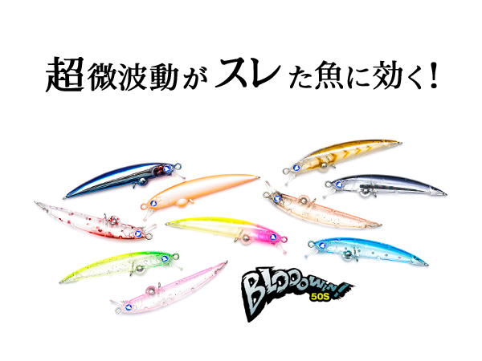
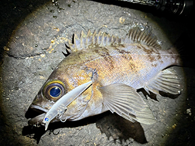
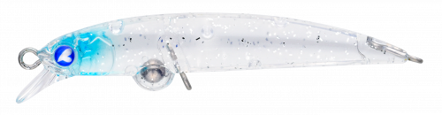
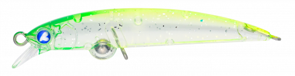

Blooowin50S
Blooowin50SはBlueBlueのスローシンキングミノーです。
超微波動がスレた魚にアプローチ。小型になってもブローウィン特有のS字アクション。

スペック
- メーカー
- BlueBlue
- 長さ
- 50 mm
- 重さ
- 2 g
- フック
- #16×2
- リング
- #0
- レンジ
- 15-40 cm
- タイプ
- ミノー
- 沈下タイプ
- スローシンキング
- アクション
- ウォブンロール
- ターゲット
- ライトゲーム
- 価格
- 1650円(税込)
- 発売日
- 2026-04-04
- 開発者
- 古賀亮介/後藤拓巳
ブローウィン50Sの特徴
渋い状況こそ、この1本。プロのアングラーが辿り着いた「信頼」のライトゲームプラグ。
-
ブローウィン独自の「ダブルアクション」
50mmという小型ボディながら、ブローウィンシリーズ特有の「ウォブンロール」と、ブレを伴う緩やかな「S字軌道」を両立。
この2つの動きが組み合わさって、ターゲットを強く誘います。 -
異次元のハイピッチレスポンスと超微波動
極限まで低重心化し、内部の空気量を確保した設計により、非常に高いレスポンス性能を実現しています。
姿勢変化の隙間に発生する"微細なブレ（超微波動）"が、スレた魚の捕食スイッチを入れます -
デッドスローでも失われない生命感ある姿勢
こだわりの固定重心と横アイ設計、フロントリングによる姿勢制御により、魚からの違和感を排除。
デッドスロー域でも生命感のある揺らぎを演出し、ブローウィンらしい「置いて流す」フィネスプラッギングを可能にしています。
ブローウィン50Sの使い方・得意な状況
基本的な使い方は、投げて巻くだけ・置いて流すだけ！
リールを巻くだけ、流れに乗せて漂わせる（置いて流す）だけで、魚を誘う姿勢を維持します。
たまにトゥイッチを入れることで微波動と食わせの間を演出できます。
ブローウィン50sは渋い状況にこそ輝きます。活性が低い時や、先行者に叩かれた後など、どうしても1匹を捻り出したい場面の最終手段として適しています。
開発者の古賀さんは「これで釣れなければ移動する」という判断基準にするほどの信頼してるとのこと。
ワンポイント
釣果を上げるワンポイントは、「隙」と「揺らぎ」を意識した操作をすること。
ブローウィン50sは、アクションの合間に発生する「微細なブレ」や「誘いの時間」が最大の特徴です。
トゥイッチを入れた後の間や超低速でのドリフトなどを身に着ければ、最後の切り札的存在のルアーになるでしょう。

画像出典:BlueBlue公式HP
人気カラー
オンライン限定カラー含めて15色がラインナップ。その中でもオススメカラーを厳選して紹介します。

マットグローヘッドグローヘッドは蓄光で、ぼんやり光でアピール。スレた魚も光によって来る。

マットチャート視認性が高く、ナイトゲームで使用しやすい。オンライン限定カラー

キラキラシラスマイクロベイトに寄せたクリアカラー。キラキラがアミパターンにも効果的。

ララライム視認性が良いクリア系。ブローウィン50限定カラーで人気の高いカラー。
画像出典:BlueBlue公式HP
ブローウィン50Sに似ているルアー
- ブローウィン60s
- アーダ86